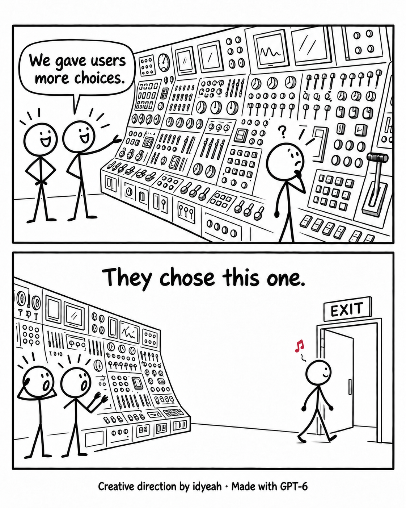
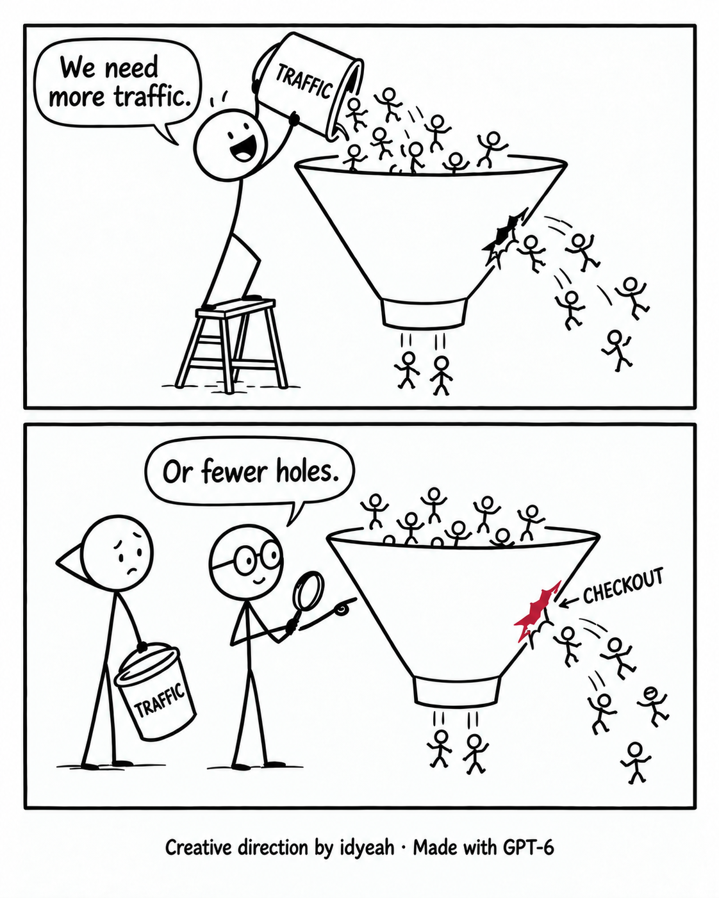

off
Back to Inside
Archive
The complete collection / 001—005
No. 005
Our brand voice depends on who has the mic.
No. 004
The megaphone arrived before the message did.
No. 003
They came for answers. You gave them a backstory.

No. 002
Leaving was the easiest feature.

No. 001
Your funnel has a plumbing problem.
×
![Two panels. A beaming founder points at an easel sign reading ‘OUR BRAND’ and says, ‘We speak with one voice.’ In the next panel three figures stand side by side, labelled ‘WEBSITE,’ ‘SOCIAL’ and ‘EMAIL.’ The website figure, in a top hat and bow tie, says, ‘Valued stakeholder.’ The social figure, in a backwards cap, says, ‘HEY BESTIE.’ The email figure, in an officer’s cap, wags a finger and says, ‘FINAL WARNING.’ In front of them a puzzled customer, chin in hand, asks, ‘Are you all related?’ Three question marks above the customer are red. Credit: Creative direction by idyeah · Made with GPT-6.](../assets/idyeah/off-idyeah/005.webp)
![Two panels. A grinning founder holds a small megaphone and says, ‘Make the message louder.’ An eager colleague strides in with a hand raised; the two are labelled ‘FOUNDER’ and ‘MARKETER.’ In the next panel the megaphone has grown enormous. The founder braces under its weight, eyes squeezed shut, blasting the words ‘INTEGRATED SOLUTIONS!’ across the panel. Far off to the right a tiny figure with a question mark above their head says, ‘I’m confused from farther away.’ The label ‘CUSTOMER’ beneath that figure is red. Credit: Creative direction by idyeah · Made with GPT-6.](../assets/idyeah/off-idyeah/004.webp)